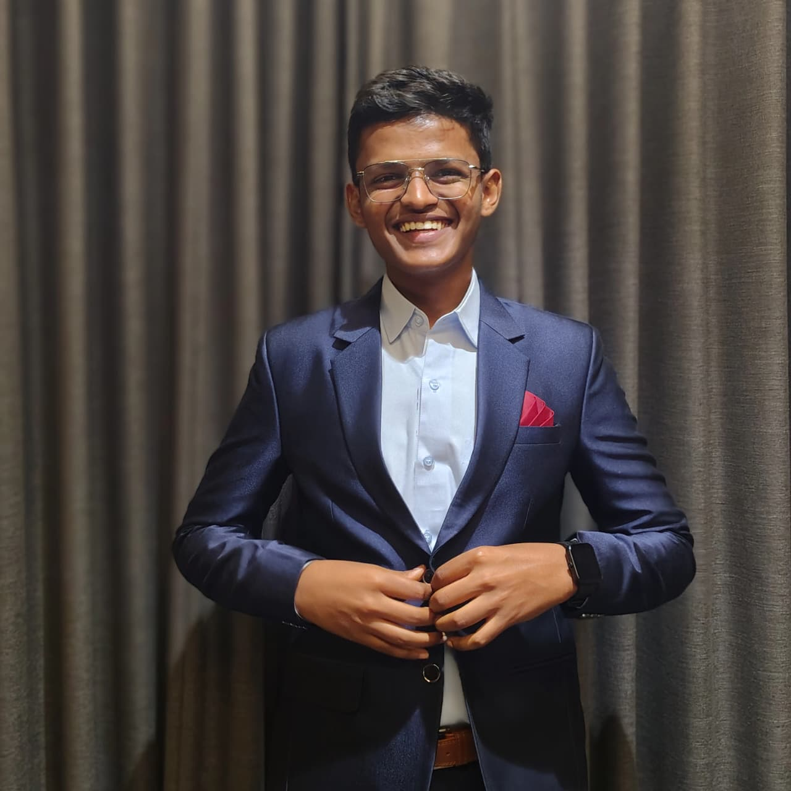
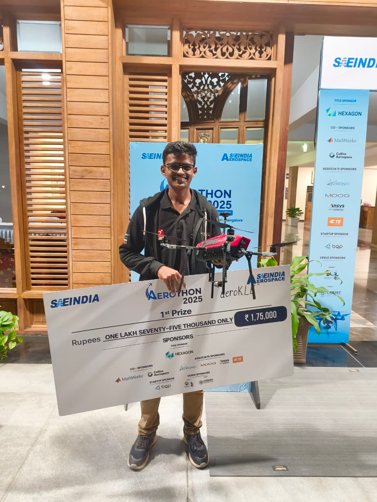
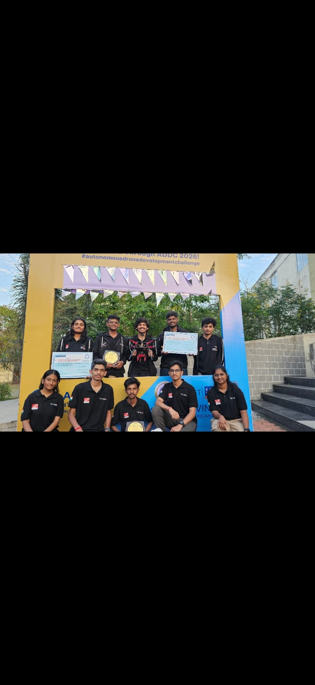
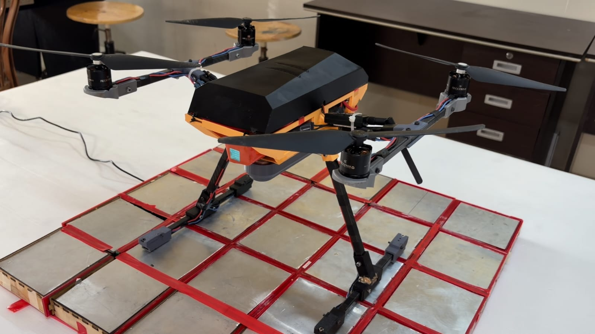

Computer Science Engineering student at KLE Technological University focused on autonomous aerial systems, GPS-denied navigation, UAV autonomy, computer vision and intelligent robotics. My work combines PX4, ROS 2, MAVLink, OpenVINS, depth sensing and embedded computing platforms to develop autonomous mission capabilities for real-world UAV applications.
GitHub Email
All India Rank
Aerothon 2025
All India Rank
ADDC 2026
Projects
Research Tracks
My primary interests lie in autonomous UAV navigation, perception systems, GPS-denied operation and mission automation. I have contributed to national-level aerospace competitions and research-driven projects involving autonomous payload delivery, object detection, visual-inertial odometry, simulation environments and obstacle avoidance systems.
PX4, Pixhawk, MAVLink, Mission Planning, Autonomous Payload Delivery
ROS 2, Gazebo, OpenVINS, Visual-Inertial Odometry, EKF Integration
YOLO, OpenCV, Object Detection, Computer Vision
Raspberry Pi, Axon Vicharak, NVIDIA Jetson, Linux
Depth Cameras, LiDAR, GPS, Optical Flow
MATLAB, Simulink, RoadRunner, Python, Git

Autonomous mission architecture, perception-driven workflows, object detection and autonomous payload delivery development.

ROS 2 and Gazebo based autonomy development, mission planning and UAV system integration.
Aircraft systems integration, avionics planning and competition-focused mission architecture.

OpenVINS integration, visual-inertial odometry and navigation in GNSS-denied environments.
Depth sensing and Vector Field Histogram based navigation for obstacle avoidance and autonomous path planning.
Interdisciplinary mechanical and electronics project developed during second semester.
ESIOT project focused on event detection, monitoring and automated alert generation.
Kinetic Sculpture
Aerothon 2025 — AIR 1
DDC Aircraft Competition
Automatic Fire Detection & Alarm System
ADDC 2026 — AIR 2
ISRO GPS-Denied Navigation Research
Autonomous Obstacle Avoidance Research
Visual-Inertial Odometry, OpenVINS and PX4-based navigation systems.
Depth sensing, environment perception and VFH path planning.
Ongoing work related to autonomous UAV systems and competition research.
Email: adityargavimath8073@gmail.com
GitHub: github.com/ADITYAGAVIMATH
KLE Technological University